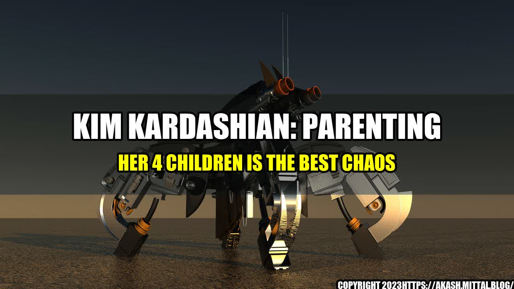

Kim Kardashian: Parenting her 4 Children is the Best Chaos

Kim Kardashian is known for being a reality TV star, model, and businesswoman. However, her most important role is being a mother to four children. Kim has often talked about how much she loves being a mom and how it has changed her life. In this article, we will take a closer look at Kim's experience as a parent and how she handles the "chaos" that comes with having four kids.
The Best Chaos
Kim has said that being a mom is the best job in the world. "It's definitely chaotic. And I'm definitely outnumbered. But it's the best chaos," she said in an interview with E! News. Kim has four children with her ex-husband, Kanye West: North, 8; Saint, 5; Chicago, 3; and Psalm, 2. She has talked openly about the challenges of parenting four children, but she has also emphasized how much joy it brings her.
- Kim loves doing activities with her kids, such as taking them to Disneyland and having family movie nights.
- In 2019, Kim and her family were featured in Vogue magazine, where she opened up about how being a mom has made her less materialistic and more focused on what is truly important in life.
- Kim has shared that she also struggles with finding time for herself and her own interests, but she has learned to prioritize her family and accept that sometimes she has to put her own desires on hold.
- Kim has also talked about how her kids have changed her priorities and values, and how she wants to be a good role model for them by giving back to her community and being involved in social causes.
- Kim Kardashian loves being a mom to her four children and sees it as the best job in the world, despite the challenges and chaos that come with it.
- Kim prioritizes spending time with her kids and doing activities that bring them joy, while also learning to balance her own needs and interests.
- Kim has also become more focused on giving back to her community and being a good role model for her kids, and sees motherhood as an opportunity to make a positive impact on the world.
and Tips
As a mother of four, Kim has shared some practical tips on how to handle the chaos of parenting:
- Get organized: Kim has said that she makes lists and uses a planner to keep track of her schedule and her kids' activities.
- Ask for help: Kim has a team of nannies and assistants who help her with her kids, but she has also learned to ask for help from family and friends when she needs it.
- Find time for self-care: Even though being a mom is her top priority, Kim also takes time to take care of herself by working out, meditating, and doing other activities that help her relax and recharge.
Reference URLs and Hashtags
Reference URLs:
- https://www.eonline.com/news/1194884/kim-kardashian-says-parenting-her-4-kids-is-chaotic-but-she-wouldnt-have-it-any-other-way
- https://www.vogue.com/article/kim-kardashian-west-cover-may-2019-issue
- https://www.harpersbazaar.com/uk/culture/culture-news/a45448/kim-kardashian-interview/
Hashtags: #KimKardashian #Parenting #Motherhood #Chaos #FamilyTime #SelfCare
Category: Lifestyle
Curated by Team Akash.Mittal.Blog
Share on Twitter Share on LinkedIn